Tear-off and install when the deck is done.
Roofing · Exterior
Roofs that keep water out. Work you can see.
New roofs, repairs, flat systems, skylights, storm damage, siding, fascia, and gutters. Rios Roofing walks the roof, writes a clear quote, and leaves the yard clean.
- New roofs and new-construction installs
- Leak repair before it hits the drywall
- Summer and winter tune-ups
- Gutter repair, wrap, and cleaning
Leaks, missing shingles, flashing, and vents.
Wind, hail, and emergency tarps after a hit.
Seasonal tune-ups so small issues stay small.
Services
What we do on and around the roof.
Houses and small buildings. If it sheds water or trims the edge of the house, we can quote it.
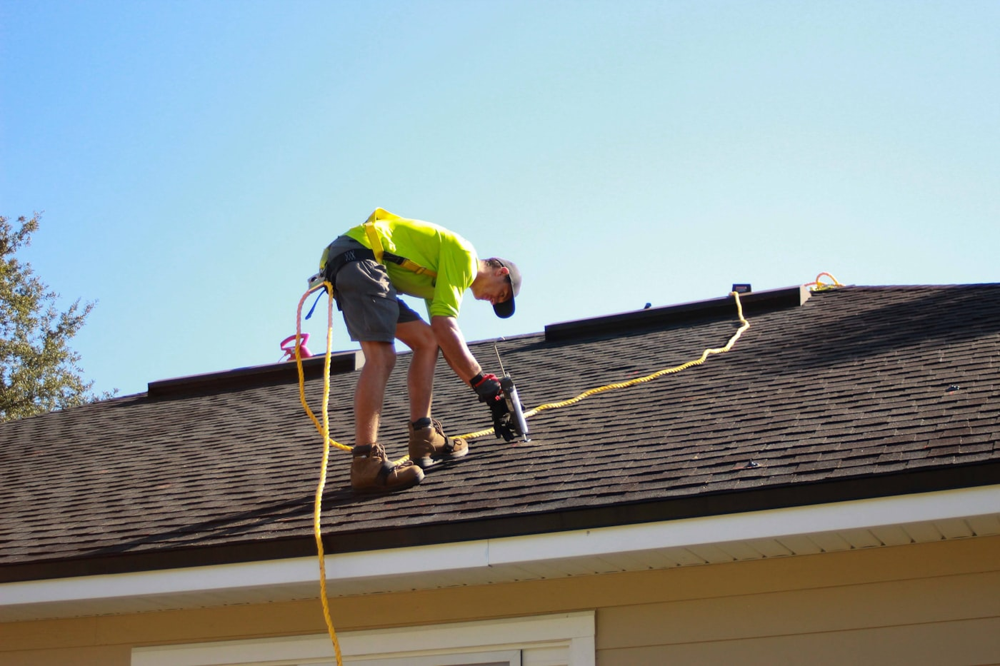
New roof
Full tear-off, deck check, and a complete shingle system — eave membrane through ridge cap — with proper flashing and ventilation. Old shingles leave in our dumpster.
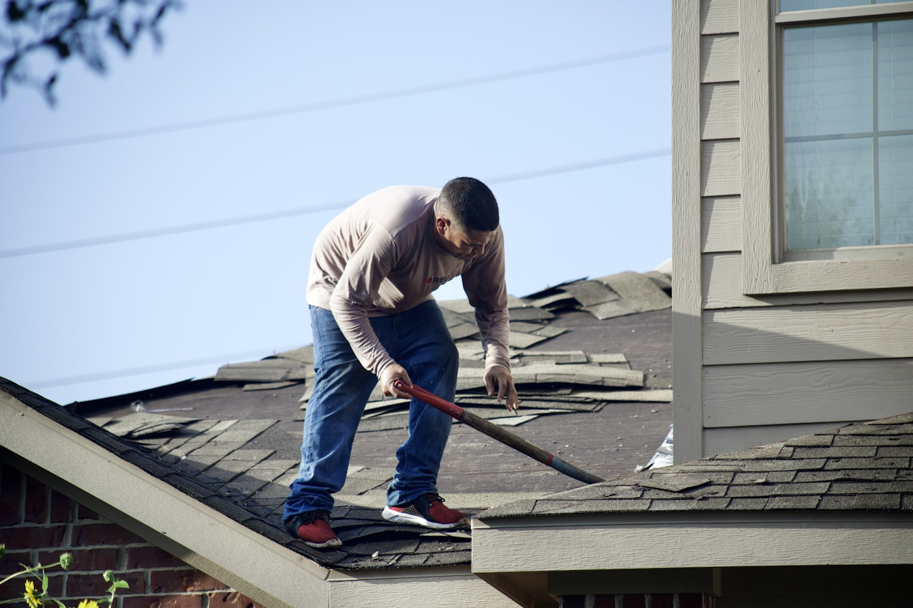
Roof repair
Active leaks, blown shingles, cracked pipe boots, and worn valleys. We find the path of the water, then fix that — not just the stain.
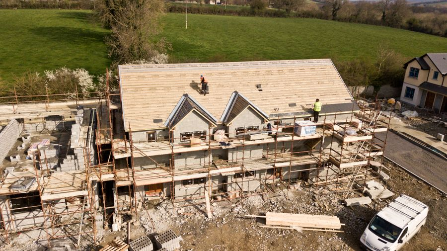
New construction roof
Roof install on new builds and additions. We work to the builder’s schedule and leave the site ready for the next trade.
Flat roofs
Low-slope and flat systems for porches, garages, and additions. We quote the membrane that fits the deck, not a one-size pitch.
Skylight installation
New skylights and leaky-unit replacements, flashed into the roof so the curb does not become the next call.
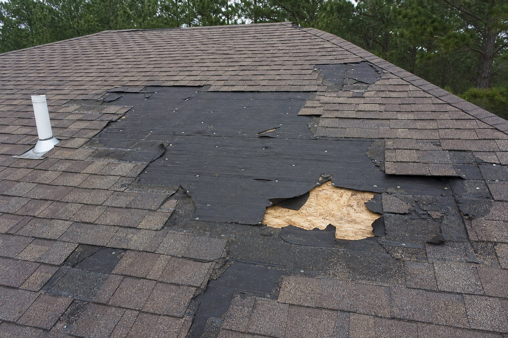
Storm damage
After wind or hail: tarp if the roof is open, then a written list of what to replace. We document the damage for insurance when you need it.
Siding
Siding is the cladding on the walls — usually lapped boards so rain runs down the face instead of into the house. We repair or replace vinyl, aluminum, or wood where water or impact has opened it, and flash the wall back into the roof, windows, and trim.
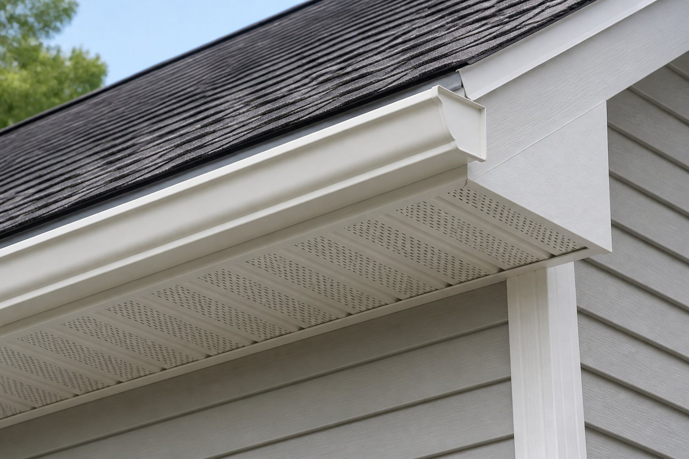
Fascia & soffit
Fascia is the board on the front of the eaves: it covers the rafter ends and is what the gutters hang from. Soffit is the underside you see looking up — it vents the attic and keeps pests out. We replace rot and install new wrap so drip edge, soffit, and gutters sit on something solid.
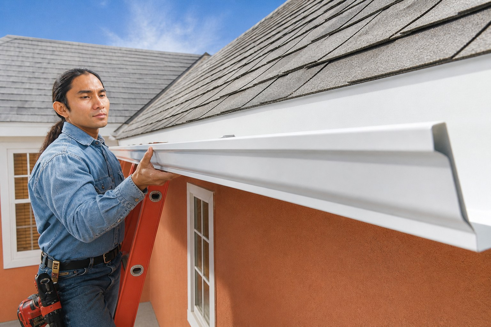
Gutter repair & wrap
Sagging runs, leaking corners, and gutter wrap so water leaves the house instead of sitting behind the fascia.
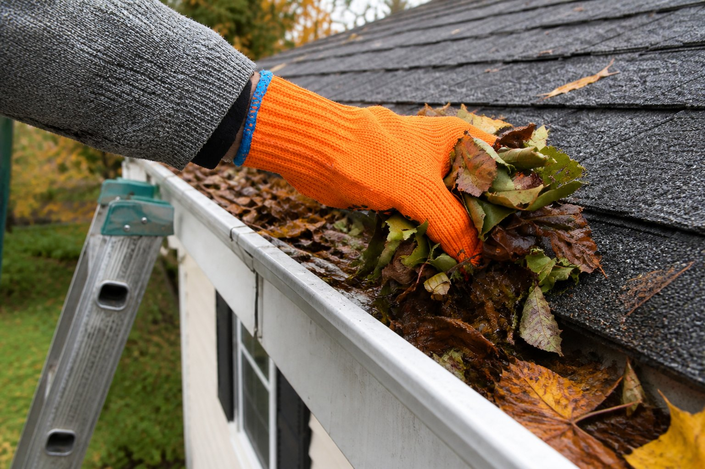
Gutter cleaning
Leaves, needles, shingle grit, and ice-dam leftovers scooped from the troughs and flushed through the downspouts. We check the hangers while we are up there.
Summer & winter tune-up
A scheduled walk of the roof before heat or freeze. We catch lifted shingles, open seals, and clogged gutters before the season does.
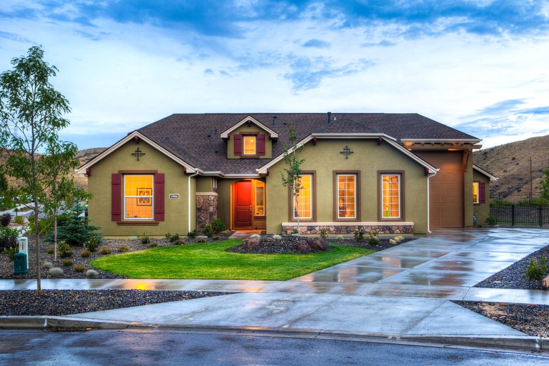
Roof maintenance
Ongoing care between full replacements: sealing, flashing touch-ups, vent checks, and a short report of what can wait.
On the job
Roofs, edges, and the work around them.
Tear-off, nailing, ridge work, haul-away, and the finished house — the kind of roofs we quote.
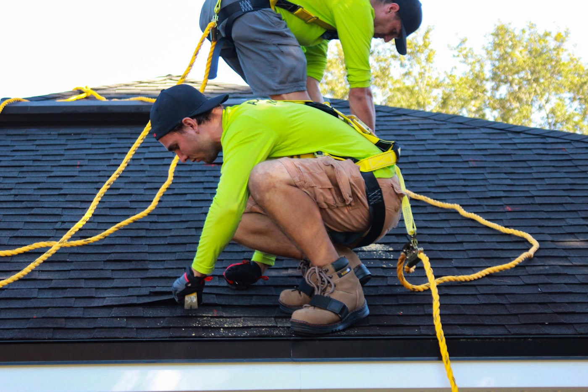
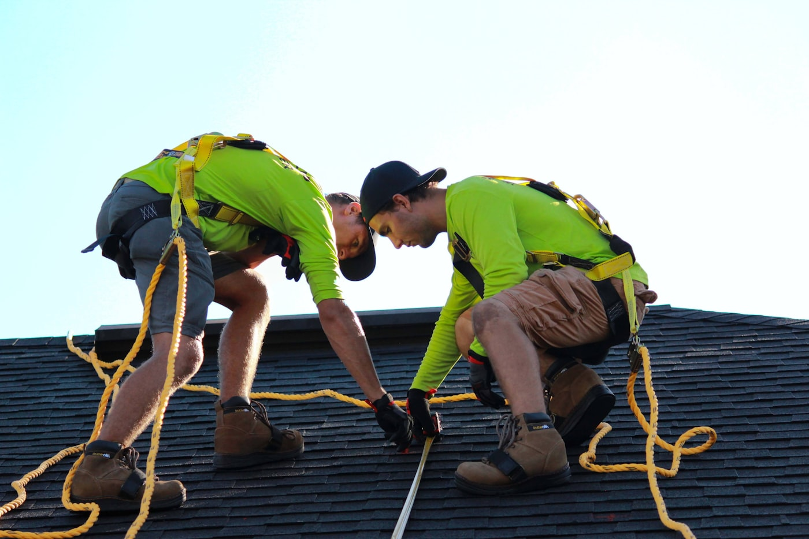
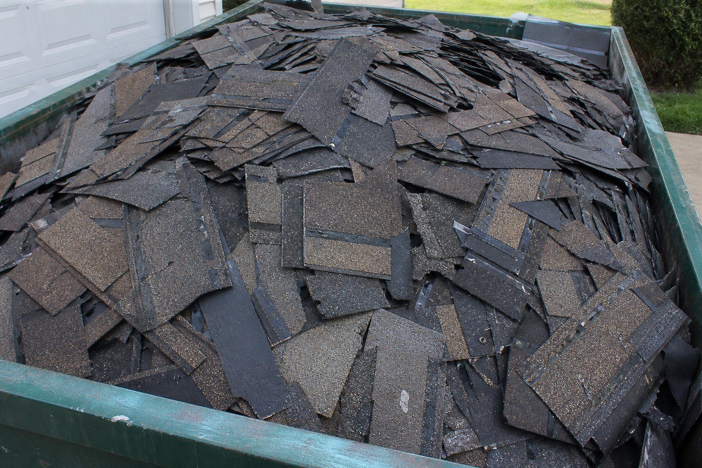
After the storm
Wind, hail, and a roof that is suddenly open.
If shingles are in the yard or water is coming in, we can tarp the opening, photograph the damage, and quote the repair or replacement. Insurance paperwork is your call — we give you a clear scope either way.
- Emergency tarp when the deck is exposed
- Photo list of missing shingles, dents, and lifted edges
- Repair when the hit is local; reroof when the system is done
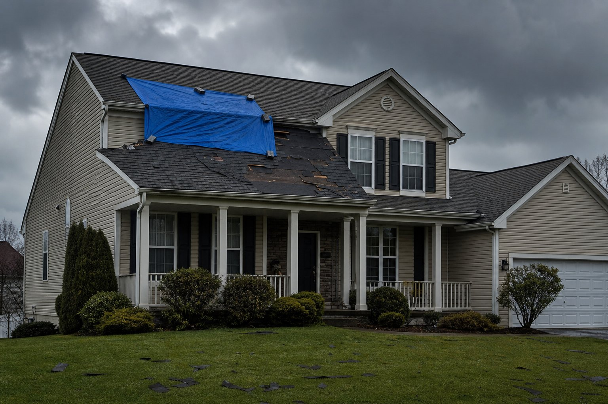
Seasonal care
Summer and winter tune-ups.
A short visit twice a year costs less than a ceiling repair. We walk the roof, clean what we can reach, and tell you what to watch.
Summer tune-up
- Shingles lifted by heat or wind
- Dried sealant at boots and flashing
- Gutter grit and downspout flow
- Attic vent screening if we can see it
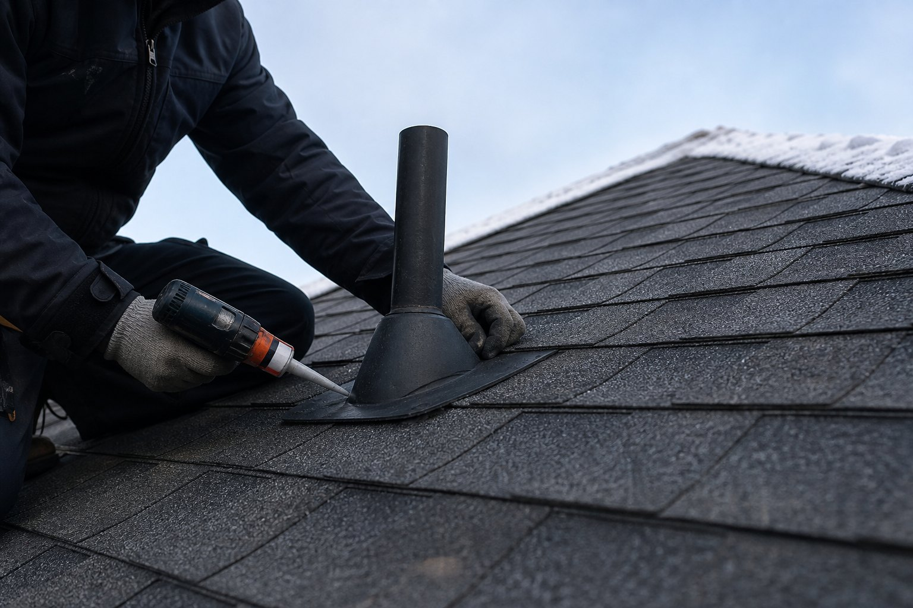
Winter tune-up
- Ice-dam risk at eaves and valleys
- Open seals before freeze-thaw
- Gutter hangers before snow load
- Skylight and chimney flashing check
Roof maintenance plan
- Scheduled visits, not a surprise leak
- Written notes after each walk
- Small repairs quoted before they spread
- Good for older roofs not ready to replace
Service area
Greater Toronto Area.
We quote houses and small buildings across Toronto, Peel, York, Halton, and Durham. If you are just outside the map, send the address — we will say if we can get there.
The circle is our Greater Toronto Area service radius — Toronto, Peel, York, Halton, and Durham.
Open in Google MapsCity of Toronto
Toronto and the old cities inside it — Etobicoke, North York, Scarborough, York, and East York.
Peel
Mississauga, Brampton, and Caledon.
York
Vaughan, Richmond Hill, Markham, Aurora, Newmarket, King, Whitchurch-Stouffville, East Gwillimbury, and Georgina.
Halton
Oakville, Burlington, Milton, and Halton Hills.
Durham
Pickering, Ajax, Whitby, Oshawa, Clarington, Uxbridge, Scugog, and Brock.
About
A roofing crew that still climbs the ladder.
Rios Roofing is a local crew for houses and small jobs — not a call centre that sells a full reroof before anyone has been on the roof. We quote what we saw, we tell you what can wait, and we clean the magnets out of the lawn.
New roofs, repairs, new construction, flat work, skylights, storm calls, siding, fascia, gutters, and seasonal maintenance. If you are not sure which of those you need, book the inspection. We will say so in plain language.
How a visit works
- You send photos and the address, or we book a walk.
- We get on the roof and check flashing, gutters, and the deck where we can see it.
- You get a written quote: repair, tune-up, or replacement.
- We schedule the crew, haul the old shingles, magnet-sweep the lawn, and leave it swept.
Contact
Book an inspection or a quote.
Tell us the roof, the leak, or the storm. Call or send the form and we will set a time.
Email
contact@gtaroofingcontractor.ca
Phone
(416) 876-2350
Serving the Greater Toronto Area — Toronto, Peel, York, Halton, and Durham.